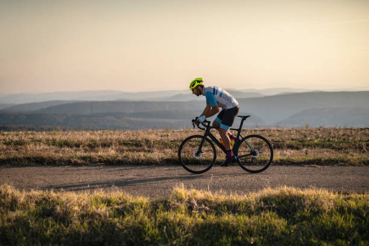

Bike Race Hub es una organización que promueve pruebas y rutas para ciclistas aficionados en diferentes montañas de Europa. Queremos organizar dos grandes eventos al año y muchos eventos más pequeños cada mes en distintas partes de Europa. Contamos con una red de clubes ciclistas asociados y seguimos ampliándola.
Visión: La organización Bike Pedals and Mountains aspira a organizar pruebas y rutas en todas las montañas de Europa, disponibles para ciclistas aficionados amantes de los viajes y la aventura.
Misión Citando a https://24hoursoflemons.com/: “El ciclismo de montaña no debería ser solo para unos pocos excéntricos. El ciclismo de montaña debería ser para todos los excéntricos.”

La ruta es de 23 km por la bella Playa de Puerto Escondido, Inscribirte no solo es un reto personal, es una inversión en tu bienestar. Al participar, estarás potenciando tu salud cardiovascular, liberando el estrés y mejorando tu resistencia física en cada kilómetro. Además, ¡tu esfuerzo tiene recompensa! Tendremos una gran premiación para los mejores tiempos de cada categoría, reconociendo el talento y la dedicación de nuestros corredores. No dejes pasar la oportunidad de vivir un día inolvidable lleno de energía y superación. ¡Asegura tu lugar hoy mismo y prepárate para conquistar la ruta!